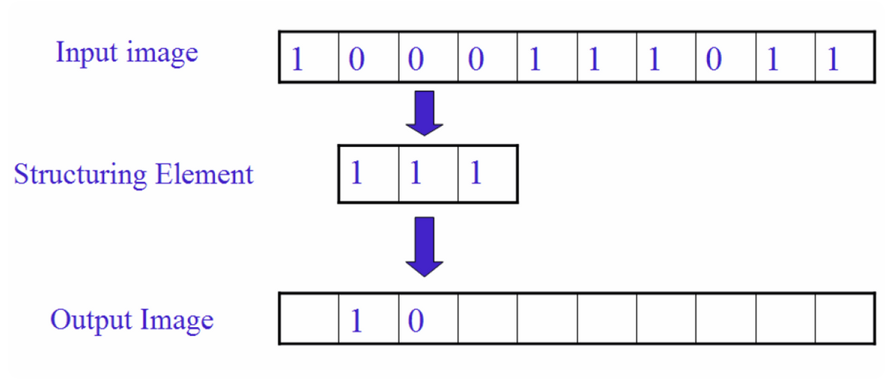
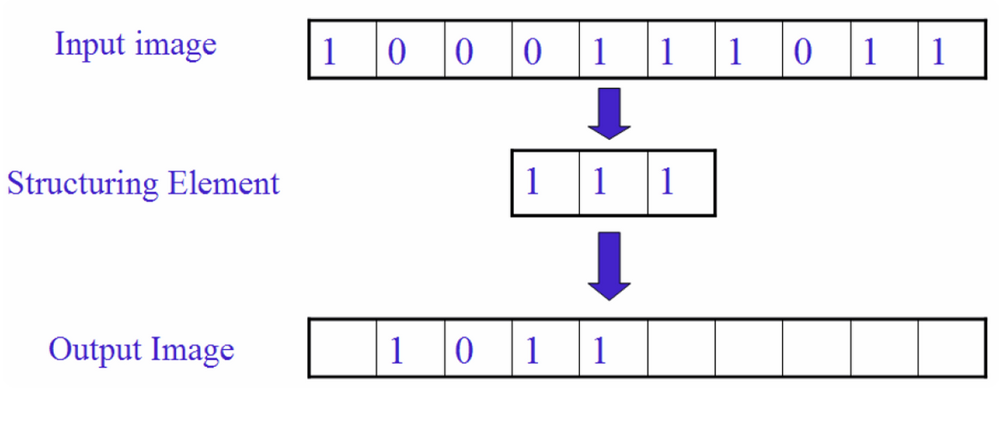

2 二值图像与形态学¶
本章概述
二值图像 | Binary image 图像二值化 | Image binarization 形态学操作 | Morphological operation
- 集合的定义 | Definition of set
- 腐蚀 | Erosion
- 膨胀 | Dilation
- 开运算 | Opening
- 闭运算 | Closing
应用 | Application
如何从灰度图转为二值图像？ 为什么需要二值图像（实际应用中二值化能把不重要的信息去掉）
Binary Image¶
灰度图与二值图像的差别如下图所示：

二值图像（Binary Image）中像素（Pixel）的值只有 {0,1} 或者 {0,255}，编程中我们一般用 {0,255} 来构造二值图像。
二值图像的优缺点：
-
优点：
- 更小的内存需求
- 运行速度更快
- 为二值图像开发的算法往往可以用于灰度级图像
-
缺点：
- 应用范围有限；
- 无法推广到三维空间中
- 表现力欠缺，不能表现物体内部细节
- 无法控制对比度
Image binarization¶
- 设置一个阈值 Threshold，比阈值小的置为 0, 比阈值大的置为 255.
- 如何选取合适的 threshold?
基本思想：将二值化得到的二值图像视为两部分，一部分对应前景（Foreground），另一部分对应背景（Background）。尝试找到一个合适的threshold使得到的前景和背景的内部方差最小，而它们之间的方差则最大。（事实上，这二者是等价的）
这就是大津算法的思想
OTSU 大津法
大津法（OTSU）是一种确定图像二值化分割阈值的算法，由日本学者大津于1979年提出。从大津法的原理上来讲，该方法又称作最大类间方差法，因为按照大津法求得的阈值进行图像二值化分割后，前景与背景图像的类间方差最大。
原理推导
OTSU算法的本质思想就是最大化类间方差
从目的来看我们想设置一个阈值\(\tau\)将图像中的像素分为\(A\)(大于\(\tau\))、\(B\)(小于\(\tau\))两类。那么我们这个阈值的取值范围就是\([0,255]\)。这里我们取整数，在这256个数中选取一个作为我们分割图像的阈值
怎么选取这个阈值呢？我们从代码层面来说
先统计图形中每个灰度的像素个数，设\(n_i\)为图像中灰度为\(i\)的像素的数量，则有\(n_0,n_1,n_2...n_{255}\)
图像中像素灰度为\(i\)的概率为:
且有：
此时根据OSTU的思想来看，我们应该找出一个\(\tau\)使得A、B两类的方法最大。者可以看成一个求最大值的问题，用\(\tau\)遍历0-255所有的整数，求出所有对应的方差，取最大方差对应的\(\tau\)
那现在唯一的问题就是已知\(\tau\)和图像，如何求A与B的方差了
设阈值为\(k\)时，像素被分到A的概率为\(p_A(k)\)、分配到A的像素的平均灰度为\(m_A(k)\)
同理设像素被分到B的概率为\(p_B(k)\)、分配到B的像素的平均灰度为\(m_B(k)\)
还有灰度级\(k\)的累加均值\(m \triangleq \Sigma _{i=0} ^k ip_i\)，整个图像的灰度值\(m_G \triangleq \Sigma _{i=0} ^{255} ip_i\)
则有：
根据方差的概念，方差的表达式写成：
将(1)带入(3):
其中：
当然，为了尊重原著我们可以把(4)写成
- 过程简述
- Step 1: 确定原始图像中像素灰度的最大值和最小值；
- Step 2: 最小值加 1 作为 threshold 对原始图像进行二值化操作；
- Step 3: 根据对应关系确定前景和背景，分别计算当前 threshold 下的内部协方差和外部协方差；（算一个就可以了）
- Step 4: 回到 Step 2 直到达到像素最大值；
- Step 5：比较找到最大外部和最小内部协方差对应的 threshold.
我们可以将前述 thresholding 策略推广到彩色图像，同时考虑 rgb 三个通道，我们就可以针对特定的色彩进行 thresholding 操作(思想类似，但是具体操作暂略)
Example

大津算法存在问题：全局进行二值化操作不给力，如中间这幅图。

我们可以采用局部自适应操作来优化成为右边的图。具体思想：设定一个局部窗口，在整个图像上滑动该窗口；对于每一窗口位置，确定针对该窗口的threshold。
Morphology Operation¶
Morphology¶
-
形态学 Morphology
1960s 后期提出，研究动植物的结构与形态。形态学一般指生物学中研究动物和植物结构的一个分支
-
数学形态学 Mathematical morphology
基础理论：集合论。采用一种简单的非线性代数算子，主要用于二值图像，可扩展到灰度图像。用在噪声过滤、形状简化、细化、分割、物体描述等
用数学形态学（也称图像代数）表示以形态为基础对图像进行分析的数学工具
- 基本思想是用具有一定形态的结构元素(structure element) 去度量和提取图像中的对应形状以达到对图像分析和识别的目的。
- 形态学图像处理的数学基础和所用语言是集合论。
- 形态学图像处理的应用可以简化图像数据，保持它们基本的形状特性，并除去不相干结构。
- 形态学图像处理的基本运算有4个：膨胀、腐蚀、开操作和闭操作
Set Theory for Image¶
For reference


膨胀 | Dilation¶
膨胀是将与物体“接触”的所有背景点合并到该物体中，使边界向外部扩张的过程。可以用来填补物体中的空洞。（其中“接触”的含义由结构元描述）
其中 A：二值图像；B：二值模板，称为结构元（structure element）
该式B对A膨胀，注意这里的\(\oplus\)不是异或的意思
膨胀的方法简单来说就是将B的中心遍历放置在图像A中所有像素点，如果B与A没有任何接触，那么这个点不作为扩张点，否则这个点就作为扩张点
Dimension 1



Dimension 2

这里的图中第二行的格子有些大，具有一定的误导性
显然我们发现，选择不同形状的结构元，结果也不同。一般来说，我们更多地选择各向同性（即对称）的结构元
腐蚀 | Erosion¶
腐蚀是一种消除边界点，使边界向内部收缩的过程。可以用来消除小且无意义的物体。
同理
\(A\): Binary image
\(B\): binary template, structure element
Physical meaning: remove boundary, remove unwanted small objects.
腐蚀的做法简单来说，就是将结构元B遍历A的每一个像素，只有B被A完全包含的像素才不会被腐蚀
Dimension 1


Dimension 2

Padding
可能有人会有疑问，加入我们的扫描从第一行开始，结构元可能就超出了图像的边界（例如十字形的结构元），这个时候应该如何处理？我们可以借用 padding 的思想：把这一行往上复制一遍，再进行扫描。
Application for Erosion
滤波

这里我们腐蚀了白色像素
提取边界

补洞

接下来我们对膨胀和腐蚀做一个小的总结：
Dilation and Erosion
- 膨胀
由B对A膨胀所产生的二值图像D是满足以下条件的点(x,y)的集合：如果B的原点平移到点(x,y)，那么它与A的交集非空。 - 腐蚀
由B对A腐蚀所产生的二值图像E是满足以下条件的点(x,y)的集合：如果B的原点平移到点(x,y)，那么B将完全包含于A中 - 膨胀与腐蚀是对偶的
\((A\ominus B)^c=\{z|(B_z)\subseteq A\}^c=\{z|(B_z)\cap A=\varnothing\}^c=\{z|(B_z)\cap A^c \neq \varnothing\}=A^c\oplus B\)
开运算 | Open¶
先腐蚀，后膨胀 \(A\circ B=(A\ominus B)\oplus B\)
Remove small objects, segment object at thin part, smooth boundary of large object but preserve its original area.

闭运算 | Close¶
先膨胀，后腐蚀 \(A \bullet B =(A\oplus B)\ominus B\)
Fill small holes, connect the neighboring objects, smooth boundary while preserving the area at most.

| 操作 | 定义 | 主要功能 | 适合处理的情况 |
|---|---|---|---|
| 开运算 (Open) | 先腐蚀再膨胀 | 去除小前景噪声，平滑物体边缘 | 适合去除细小的白色前景噪声，平滑前景边缘 |
| 闭运算 (Close) | 先膨胀再腐蚀 | 填充小孔，连接断裂部分，平滑边缘 | 适合填补前景中的小黑色空洞，连接前景物体 |
总结¶